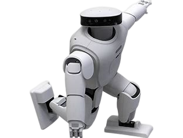

欢迎访问IRC
俱乐部简介
哈工大智能机器人俱乐部（HITIRC）成立于2013年，隶属于哈工大计算学部团委
通过基于智能机器人的开发平台实践，达到俱乐部成员共同成长的目标
俱乐部成员因热爱而聚，因热爱同行
俱乐部历年来斩获奖项

- 2013年第十五届全国机器人锦标赛一等奖
- 2014年哈工大“祖光杯”创业创新创业大赛一等奖
- 2014年第十六届全国机器人锦标赛一等奖
- 2014年哈工大“丁香杯”创业创新大赛一等奖
- 2015年世界大学生超级计算机竞赛优秀奖
- 2015年第十七届全国机器人锦标赛一等奖
- 2015年第十五届全国大学生机器人大赛一等奖
- 2015年黑龙江省亿阳杯创业创新大赛一等奖
- 2015年哈尔滨工业大学“丁香杯”创业大赛铜奖
- 2014年科沃斯机器人创想秀《基于自主研发控制的舵机机器人、机械臂与机械狗》一等奖
- 2015年科沃斯机器人创想秀《智能搜救机器人》二等奖
- 2016年全国大学生创业大赛（创青春）金奖
- 2017年第三届中国“互联网+”大学生创新创业大赛银奖
- 2021年中国机器人及人工智能大赛一等奖
俱乐部目标
- 总目标
- CRAIC中国机器人及人工智能大赛
- BOTEC国际智能机器人技术挑战赛
- 培养机器人兴趣，提升操作机器人的能力，增加比赛经验
- 训练项目
- 培养机器人OpenCV视觉学习
- 培养机器人ROS框架学习
- 培养双足机器人步态算法学习
俱乐部最新活动
| 活动 |
时间 |
地点 |
| 迎新演示 |
2022/10/29/10:00 |
科学院J1513 |
| 二区路演 |
2022/10/30/09:00 |
二区阳光大厅 |
| 第一次培训讲座 |
2022/11/19/19:00 |
线上腾讯会议 |
俱乐部现状
- 俱乐部目前总人数为77人，由大一大二学生组成
- 俱乐部目前拥有Aelos机器人5台，Roban机器人1台，搭建了Aelos和Roban比赛场地
- 俱乐部地址位于科创园区
- 俱乐部拥有获奖学长指导和专业技术人员指导
- 俱乐部会不定期开展技术培训
俱乐部联系方式